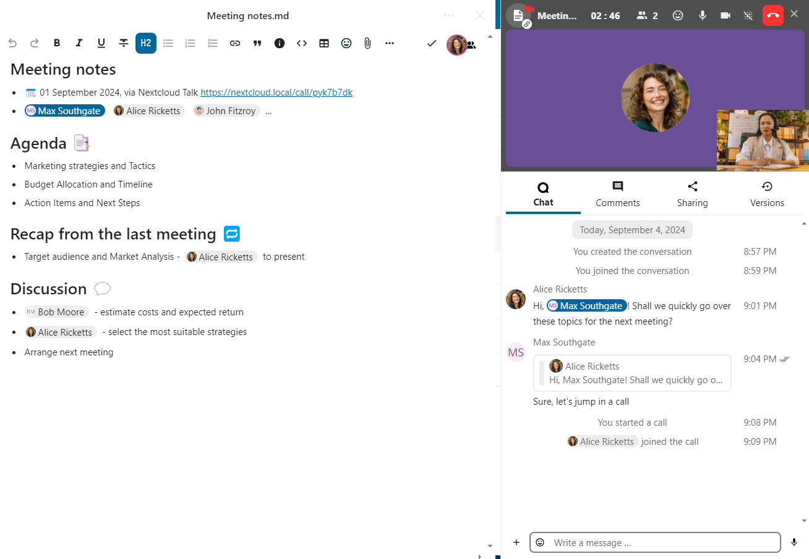
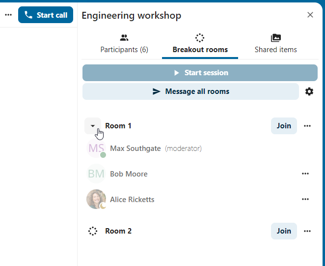
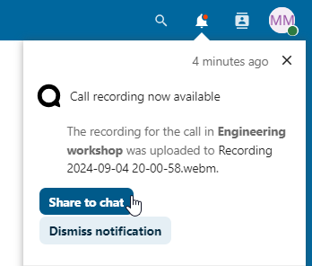
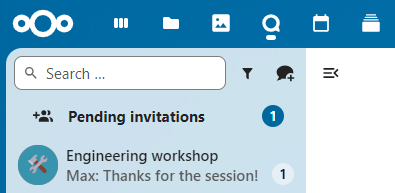
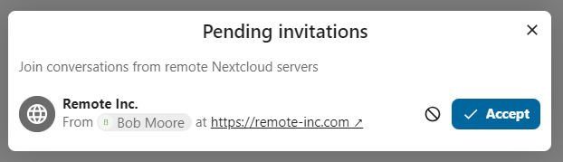

Funcionalidades avançadas do Talk
O Nextcloud Talk tem diversas funcionalidades avançadas que os usuários podem achar úteis.
Matterbridge
A integração do Nextcloud Talk com o Matterbridge permite a criação de ‘pontes’ entre conversas no Talk e conversas em outros serviços como o MS Teams, Discord, Matrix e outros. Você pode encontrar uma lista de protocolos suportados na página do Matterbridge no Github
Um moderador pode adicionar uma conexão Matterbridge nas configurações de conversa.

Cada uma das pontes tem sua própria necessidade em termos de configuração. A maioria das informações está disponível no wiki do Matterbridge e pode ser acessada por meio do menu `` mais informações`` no menu `` … ``. Você também pode `acessar o wiki diretamente. <https://github.com/42wim/matterbridge/wiki> `_
Saguão
O sagão permite que você mostre uma tela de espera a visitantes até que a chamada comece. Isso é ideal para webinários com participantes externos, por exemplo.

Você pode escolher deixar participantes entrarem em um horário específico, ou quando você liberar o saguão manualmente.
Comandos
Nextcloud permite aos usuários executar ações usando comandos. Um comando normalmente se parece com:
/wiki aeroportos
Administradores podem configurar, habilitar e desabilitar comandos. Usuários podem usar o comando ajuda``(`ou `help) para descobrir os comandos disponíveis.
/ajuda

Encontre mais informações na documentação administrativa do Talk .
Talk de Arquivos
No aplicativo Arquivos você pode conversar sobre arquivos usando a barra lateral, e até mesmo fazer uma chamada enquanto edita. Você precisa primeiro entrar no chat.

{kind=link}
Você pode então ligar ou falar por chat com outros participantes, mesmo quando você começar a editar o arquivo.
{kind=link}
No Talk, uma conversa será criada para o arquivo. Você pode conversar de lá, ou voltar para o arquivo usando o menu ... no canto superior-direito.

Crie tarefas a partir do chat ou compartilhe tarefas no chat
Se o aplicativo Deck estiver instalado, você pode usar o menu ... de uma mensagem no chat e torná-la uma tarefa no Deck.


A partir do Deck você pode compartilhar tarefas numa conversa de chat.


Salas Temáticas
As salas temáticas permitem que você divida uma chamada do Nextcloud Talk em grupos menores para discussões mais focadas. O moderador da chamada pode criar várias salas de grupo e atribuir participantes a cada sala.
Nota
Breakout rooms are currently not available in conversations that are joinable by guests (public conversations).
Configurar salas temáticas
Para criar salas temáticas, você precisa ser um moderador em uma conversa em grupo. Clique no menu da barra superior e clique em “Configurar salas de grupo”.

Uma caixa de diálogo será aberta onde você pode especificar o número de salas que deseja criar e o método de atribuição dos participantes. Aqui você será presenteado com 3 opções:
Atribuir participantes automaticamente: o Talk atribuirá automaticamente os participantes às salas.
Atribuir participantes manualmente: Você passará por um editor de participantes onde poderá atribuir os participantes às salas.
Permitir que os participantes escolham: os próprios participantes poderão entrar nas salas temáticas.
{kind=link}
Gerenciar salas temáticas
Depois que as salas temáticas forem criadas, você poderá vê-las na barra lateral.
{kind=link}
No cabeçalho da barra lateral
Iniciar e interromper as salas temáticas: isso moverá todos os usuários na conversa principal para suas respectivas salas temáticas.
Transmitir uma mensagem para todas as salas: enviará uma mensagem para todos os quartos ao mesmo tempo.
Faça alterações nos participantes atribuídos: isso abrirá o editor de participantes, onde você poderá alterar quais participantes estão atribuídos a cada sala de grupo. A partir desta caixa de diálogo também é possível excluir as salas de descanso.

No elemento da sala temática na barra lateral, você também pode ingressar em uma sala temática específica ou enviar uma mensagem para uma sala específica.

Call recording
The recording feature provides users with an opportunity to:
Start and stop recordings during a call.
Record the video and audio stream of the speaker, as well as screen share.
Access, share and download recorded files for future reference or distribution.
Enabling this feature requires the recording server to be set up by the system administration.
Manage a recording
The moderator of the conversation can start a recording together with a call start or anytime during a call:
Before the call: tick the checkbox “Start recording immediately with the call” in “Media settings”, then click on “Start call”.
During the call: click on the top-bar menu, then click “Start recording”.

{kind=link}
The recording will start shortly, and you will see a red indicator next to the call time. You can stop the recording at any time while the call is still ongoing by clicking on that indicator and selecting “Stop recording”, or by using the same action in the top-bar menu. If you do not manually stop the recording, it will end automatically when the call ends.

After stopping a recording, the server will take some time to prepare and save the recorded file. The moderator, who started the recording, receives a notification when the file is uploaded. From there, it can be shared in the chat.
{kind=link}

Recording consent
For compliance reasons with various privacy rights, it is possible to ask participants for consent to be recorded before joining the call. The system administration has the flexibility to utilize this feature in several ways:
Disable consent completely.
Enable mandatory consent system-wide, requiring consent for all conversations.
Allow moderators to configure this option on a conversation level. In such cases, moderators can access the conversation settings to configure this option accordingly:

If recording consent is enabled, every participant, including moderators, will see a highlighted section in the “Media settings” before joining a call. This section informs participants that the call may be recorded. To give explicit consent for recording, participants must check the box. If they do not give consent, they will not be allowed to join the call.

{kind=link}
Federated conversation
With Federation feature, users can create conversations across different federated Talk instances and use Talk features as if they were on a same server.
Important Under current development. Basic chat features are available, more to come in the future!
Feature is required to be set up by the system administration.
Send and accept invites
The moderator of the conversation can send an invite to participant on a different server:

When receiving a notification, user will see a counter of pending invites above the conversations list.
{kind=link}
Upon clicking it, more information will be provided about inviting party, and user can either accept or decline the invitation.
{kind=link}
By accepting the invite, conversation will appear in the list as any other one.